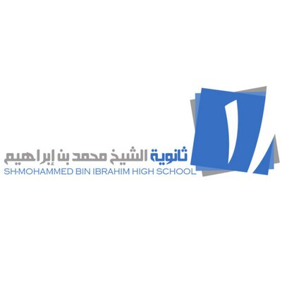

خريجو المدرسة الفخورين بها
يسعدنا ويشرفنا أن نضع بين أيديكم لوحة تضم اسامي من طلابنا الخريجين. اضغط على الزر أدناه للاطلاع على قائمة المتخرجين للعام الدراسي.
🎓 عرض أسماء المتخرجين

خريجي ثالث ثانوي دفعة 45
1446 - 2026
يسعدنا ويشرفنا أن نضع بين أيديكم لوحة تضم اسامي من طلابنا الخريجين. اضغط على الزر أدناه للاطلاع على قائمة المتخرجين للعام الدراسي.
🎓 عرض أسماء المتخرجين